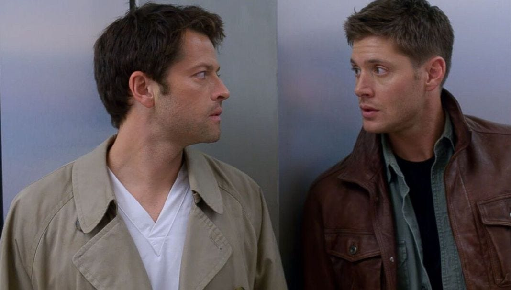
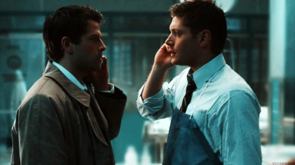
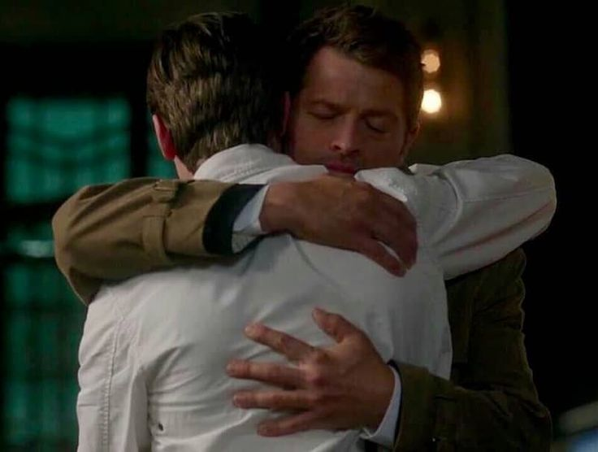

El desarrollo romántico del Destiel es, para muchos, la historia de una "caída" hacia la humanidad motivada puramente por el amor. Todo comienza en aquel granero, cuando Castiel saca a Dean del infierno, dejando una marca de su mano quemada en el hombro del cazador; un gesto que simboliza que, desde el primer segundo, sus almas quedaron entrelazadas. Lo que empezó como una relación jerárquica entre un soldado de Dios y un humano roto, evolucionó rápidamente en un lazo profundo que llevó a Castiel a rebelarse contra el Cielo, convirtiéndose en un ángel caído solo por seguir a Dean Winchester.
La conexión entre ambos se cocina a fuego lento a través de décadas de subtexto. No se trata solo de las palabras, sino de las miradas prolongadas, el espacio personal inexistente y los sacrificios extremos: Castiel dio su inmortalidad y su hogar celestial por Dean, mientras que Dean, un hombre criado para no mostrar vulnerabilidad, encontró en el ángel al único ser capaz de entender su carga emocional sin juzgarlo. Su relación es el ancla que los mantiene cuerdos en un mundo de monstruos; es la búsqueda de una familia elegida que desafía cualquier diseño divino.

El clímax de este desarrollo llega con la confesión final, donde se revela que la "felicidad" de Castiel no reside en salvar el mundo, sino simplemente en amar a Dean. Es una narrativa de redención mutua: Castiel humaniza a Dean, enseñándole que es digno de amor, y Dean le da a Castiel un propósito que va más allá de ser un arma celestial. Al final, el Destiel no es solo un ship, es la crónica de cómo un amor prohibido y "no planificado" cambió el destino del universo, demostrando que incluso un ángel puede encontrar su humanidad en los ojos de un cazador. La conexión entre ellos alcanzó una dimensión estratosférica cuando el propio Robert Berens, guionista del episodio "Despair", y el equipo de producción confirmaron que la declaración de Castiel fue explícitamente romántica. No fue un amor fraternal ni platónico; fue la culminación de doce años de tensión sexual y emocional. El hecho de que Cas lograra alcanzar su "momento de felicidad pura" confesando lo que sentía por Dean valida que su motor siempre fue el amor romántico, transformando un tropo de fantasía en una de las historias de sacrificio más potentes del género.
Pero el verdadero caos (y la gloria para el fandom) ocurrió con el doblaje al español. Mientras que en la versión original en inglés Dean se queda mudo por el impacto del momento, en la versión distribuida para Latinoamérica y otros territorios, Dean responde con un contundente "Yo a ti, Cas". Esta filtración o elección de doblaje incendió las redes sociales, ya que para muchos fue la pieza del rompecabezas que faltaba: la confirmación de que el sentimiento era recíproco. Aunque en la versión final de EE. UU. se mantuvo el silencio de Dean, el doblaje quedó como una prueba mística de que, en alguna versión del guion o de la intención actoral, el amor mutuo siempre estuvo ahí, latente y real.